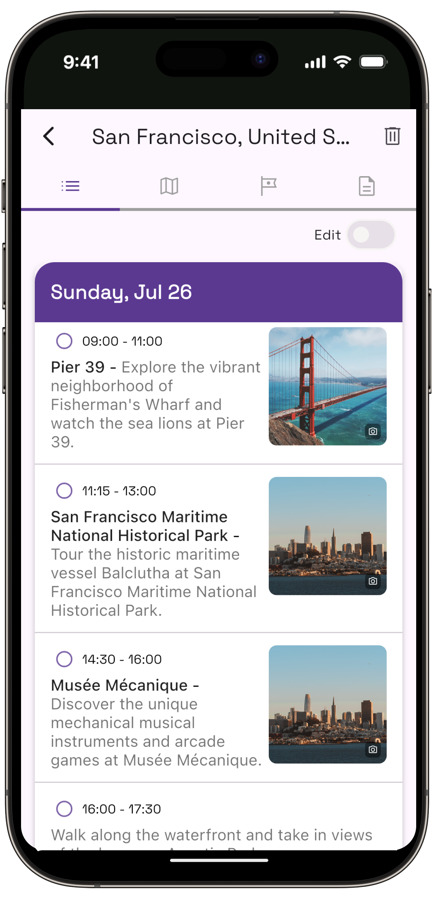
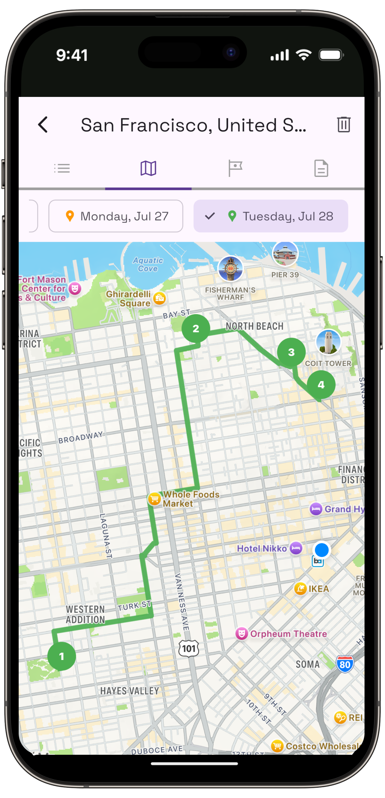

Comparisons
Both apps start from a flight. TripIt asks when it lands so it can tell you when to leave for the airport. Owlio asks so it can decide how much of Tuesday exists.
Owlio and TripIt are not really competitors, and choosing between them comes down to which gap the trip has. TripIt is for the trip that is already booked and needs to be kept straight. Owlio is for the trip that is booked and still empty, where the hard part is deciding what goes on which day.
Take a flight that lands at 16:40. TripIt records it, watches it, and tells you when to leave for the airport on the way home. Owlio takes the same landing and concludes that the first day is an evening, then plans one accordingly. Same input, two different questions.
That difference decides everything below, including the cases where TripIt is plainly the better choice. This comparison was checked against TripIt's own pages in September 2026.
TripIt starts from what you have booked. Owlio starts from a city and the hours you have in it. Most of the comparison follows from that.
TripIt organises reservations you have already made, and Owlio builds a day-by-day plan for a city you have not yet seen. TripIt's own line is "You handle the booking, TripIt builds your itinerary": forward a confirmation email to plans@tripit.com and it assembles the flights, hotel and rentals into one trip.
Owlio inverts the input. You give it one city, your real arrival and departure times and a pace (relaxed, balanced or packed), and it returns the stops, ordered and placed on a map. A 4pm landing gets a half day instead of a full one. The flight-times post works through that arithmetic in full.
So TripIt's output is a record of decisions already made elsewhere. Owlio's output is the decisions. Neither app has a feature that does the other's job, and both sides of that are deliberate.
| Owlio | TripIt | |
|---|---|---|
| What you give it | A city, arrival and departure times, a pace | Confirmation emails, forwarded to plans@tripit.com |
| What it produces | A day-by-day plan of stops on a map | One itinerary of the bookings you already have |
| Proposes what to see | Yes, that is the product | No such feature on its free or Pro lists; plans can be added by hand |
| Flight alerts, alternate flights | None | Pro: real-time alerts, alternate flights, fare refund monitoring |
| Adds bookings from your inbox | No import at all | Pro: adds plans from your inbox for you |
| Trip shape | One city per trip | Whatever you have booked, across cities |
| Documents | Boarding passes and tickets kept next to the plan | 3 per trip free, 25 per trip with Pro |
| Platforms | iOS 15.6+ and Android 7.0+ | iOS and Android |
| Price | Free to try | Free tier; Pro is $49 a year, with a free trial (September 2026) |
On everything that happens to a booking, TripIt is far ahead. Owlio does not import a single reservation, so a flight number and a hotel address get typed or stored as documents. TripIt reads the confirmation email and builds the entry itself.
The paid tier goes further into the travel day. As of September 2026 TripIt Pro lists real-time flight alerts, alternate flights, terminal and gate reminders, a prompt for when to leave for the airport, and connecting-gate guidance. Owlio attempts none of it. If a trip is three flights and two hotels, that machinery matters more than any sightseeing suggestion.
Shape is the other clear loss. Owlio plans one city per trip and says so; a two-city trip needs two plans. TripIt organises whatever arrives in the inbox, so a four-stop route is just more emails. It also has the scale that Owlio does not, with its App Store listing citing nearly 20 million travellers and a 4.8 rating across 311K ratings.
Sharing tilts the same way. TripIt's free tier helps you share plans with others, and Pro adds Inner Circle, which gives chosen people automatic access to every trip. Owlio has no collaboration at all.
Owlio wins at the part TripIt never attempts, which is deciding what to do with the hours. Nothing on TripIt's free or Pro feature lists proposes a museum, an order for a day or a route between stops. It stores the tickets once you have them. It does not tell you that eleven stops will not fit in a Tuesday.
The plan is also sized to the trip's real ends. A first day that starts at 16:40 is not a full day, and Owlio does not price it as one, where a date-only planner would. The pace setting then decides how full the days in between get, and every day's stops sit numbered on an interactive map so a walk can be told from a commute at a glance.
The rest of the app is built around being in the city. Point the camera at a landmark or a painting and it names it. Nearby restaurants, cafés and bars are ranked for wherever you are standing, and the forecast sits beside each day. TripIt also displays weather on its free tier, so that one is a tie.
Use TripIt if the trouble is bookings, and Owlio if the trouble is an empty day. Each is the wrong tool for the other's problem, and the mismatch is easy to spot in advance.
The honest sorting:
Yes, and on a single-city trip it is often the best setup, because the two never touch the same job. TripIt holds the flights, the hotel and the alerts. Owlio holds the days.
The handover is the landing time. Read it off the TripIt itinerary, give it to Owlio, and the plan comes back sized to the hours that are left. A finished example of what such a plan looks like is in the 3 days in Lisbon guide.
The overlap is small. Both keep documents, and TripIt's free tier stops at three per trip while Pro allows 25. Both show a map. Beyond that, running the two costs one extra app and removes the two failures each has alone: a tidy trip with nothing planned, and a full plan for a day the flight has already cut in half.
Pricing and features were checked on TripIt's own pricing page and help centre in September 2026. TripIt has changed what sits in each tier before. Confirm the current split before paying for Pro.
Is Owlio a TripIt alternative?
Only partly. Owlio covers the part TripIt leaves out, which is choosing what to see and in what order for one city. It does not import bookings, track flights or send alerts. Anyone who wants TripIt's booking organisation will still need TripIt, or something like it.
Does TripIt plan what to do in a city?
No. TripIt organises reservations you already have, and you can add other plans by hand on its website or app. None of the features on its free or Pro lists proposes sightseeing or builds a day around your arrival time. That gap is the one Owlio fills.
How much does TripIt cost?
TripIt has a free tier, and TripIt Pro is $49 a year on TripIt's own pricing page as of September 2026, with a free trial offered. The App Store lists the annual subscription at $48.99. Pro adds flight alerts, alternate flights and 25 documents per trip.
Does Owlio work for trips with more than one city?
One city per trip, by design. It keeps each day walkable instead of spreading stops across a country. For a two-city trip, create a plan for each city. If the route matters more than the days in each place, TripIt is the better fit.
Which is better for a short city break?
For deciding what to do with two to four days in one city, Owlio, because it plans around the real landing and departure times. For keeping the flights, hotel and alerts straight, TripIt. Many short breaks need both, since the two do not overlap.
Do Owlio and TripIt work offline?
TripIt says its app lets you access your itinerary offline while you stay signed in. Owlio's site does not state an offline mode, so this comparison makes no claim either way. Check the app before relying on either without a signal.
Give Owlio a city and your real arrival and departure times, and it returns a plan sized to the hours you actually have. Free to try on iPhone, iPad and Android.

